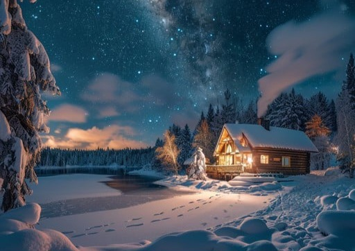

ای که بیتو شب فراق بر ما تاریک شد،
دل ز آتش غم سوخت و جانزده و پریشان شد.
هر لحظه فراق تو، خود چون دریای بیکرانه است،
ای کاش با چنین غم، دلِ ما کنارِ تو آشنا بود.
بیتو روز و شب دل و جانم نیاساید دمی،
بازگرد ای مایهٔ تسکین که تا رفتی تو رفت…

⏮
▶
⏭